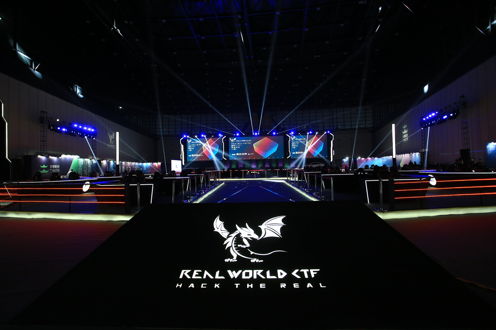
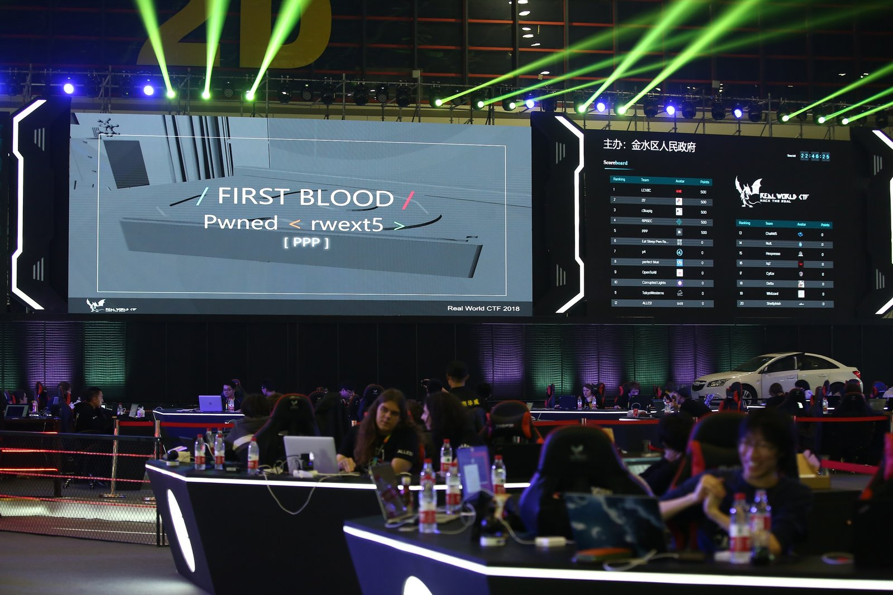

Real World CTF, first organized in 2018, has come to be one of the highlights of the year for the CTF community. It tries to prove wrong all the CTF haters ("I hate CTFs because they are not realistic.") by building challenges on top of real world applications.
This year, due to COVID-19, the format was "Online Jeopardy", only, with no Final Stage. However, in previous editions, the final event was simply incredible.


Here you can find a cool vlog made by LiveOverflow prezenting the 2018 finals.
But anyway, this year, together with my teammates from WreckTheLine we managed to finish the CTF on #5 which is an incredible performance and great team effort. Really Proud.
Enough with the introduction now, let's dive into this amazing challenge...
Clone-and-Pwn difficulty:Schrödinger
The challenge provided us with an ip & port nc 47.242.149.197 7600, in order to pwn the task remotely and get the flag, plus an arhcive QLaaS_61a8e641694e10ce360554241bdda977.tar.gz
. The goal is to run the SUID binary /readflag which will print the file flag .
Opening the archive we can see that there's just one small python script:
b64 encoded. Then, it will proceed to create a temporary directory
and save our binary inside that folder. After that, a Qiling instance is created, to whom the path to the binary and the temporary folder
are passed, followed by a call to the run() method.1.4.1 (the latest version).
It turns out that the Qiling constructor is expecting a binary to emulate and a rootfs (sandbox). But then, how will it know what type of
binary we've provided? Let's check that in the source code.
First, it will look for certain file extensions, if they are not provided as part of the filename, then it will look for file signatures (ex. \x7fELF) and determin
the operating system from that. Great, now we know, that we're allowed to work with any binary from the supported list since no specific ostype is passed to Qiling.
Okay, we now should have a clear understanding of what we're dealing with, and what the goal is: escape the sandbox by exploiting the framework with the binary that we provide and then execute
the /senflag binary to get the flag.
But the real question is: how on earth are we going to do that, after all, we're dealing with thousands of lines of code.
The best approach to this is to try and divide this big chunk of code into smaller chunks. For example, a small chunk could be the syscall implementation.
Qiling implemented quite a lot of system calls from all the supported operating systems.
The source code for this can be found here: https://github.com/qilingframework/qiling/blob/master/qiling/os/posix/syscall/fcntl.py
Let's have a look at ql_syscall_openat(ql: Qiling, fd: int, path: int, flags: int, mode: int)
openat is a systemcall that "operates in exactly the same way as open(2)" except for a few differences:
Quickly looking at the function line by line, we can see that it first reads the file_path , sets the flags & mode
and then iterates over the fd array to find an empty slot which is stored in idx. On success,
a few checks are performed which eventually will bring us to line no. 108. Here we can see that the function open_ql_file is called and dir_fd is passed to it.
Inside the open_ql_file function, there is a check on the parameter path (file_path)
to see if it has_mapping, that basically means if the file is already opened. On contrary, the functions checks if dir_fd parameter is set (not null)
and then execute: ql_file.open -> open(real_path, openmode) 💡
Now this is very interesting. In a nutshell, if we call openat with an existing file descriptor (let's say 1) and the path to a file (let's say /etc/passwd)
we will be able to create a fd to the file and read / write from / to it without being restricted by the Qiling's rootfs.
Let's test what we've just discovered:
We will call the openat function (which underneath will invoke the openat syscall). Will set the file_path
to /etc/passwd, the flags to O_RDONLY and dir_fd to 1. And voilà, we are able to read
the contents of file_path although the specified file does not belong to the rootfs.
#🆂🅰🅽🅳🅱🅾🆇🅴🆂🅲🅰🅿🅴 💣
Okay now, we've proven our hypothesis. We have the great ability to read and write into files we have permission to. What would be a responssible way of using it?
/proc/self/maps
What is this file you might ask? Oh well, let's have a look at it:
As we can see, each row basically describes a region of contiguous virtual memory of the current process (in my case /bin/sh). We can see the address (the starting and ending
address of the region in the process's address space). The permissions (this describes how pages in the region can be accessed - r/w/x). offset, inode,
pathname (if the region was mapped from a file, this is the name of the file, otherwise, the name of some special regions like heap/stack/vvar/vdso).
Let's try reading this file through our exploit:
Alright, dope! What next tho? Well, now that we know where the python binary is located, and where the executable region is 0x00423000, all we have to do is to overwrite part of it with a shellcode that will
spawn a shell 🙂
How are we gonna do that?
/proc/self/mem
"This file can be used to access the pages of a process's memory through open(2), read(2), and lseek(2)."
This is a very popular and powerful trick to bypass write protections for memory pages.
What exactly should we look to overwrite in this case? The options are endless, but I decided that it would be very easy
to simply overwrite the PLT trampoline located at offset +0x20 . Let's put this all together:
I believe this was a very nice challenge. The exploitation process was not hard at all, it just involved a bit of creativity, however, finding the vulnerability was a bit of a challenge.
Meanwhile, the vulnerability has been patched: https://github.com/qilingframework/qiling/commit/6d0fc4a81880abc2984552ccd23497d8832d00fe
A fun fact about the CTF is that for every solved challenge, they rewarded the team with a token specific to the category: see Profile
Until next time 👋